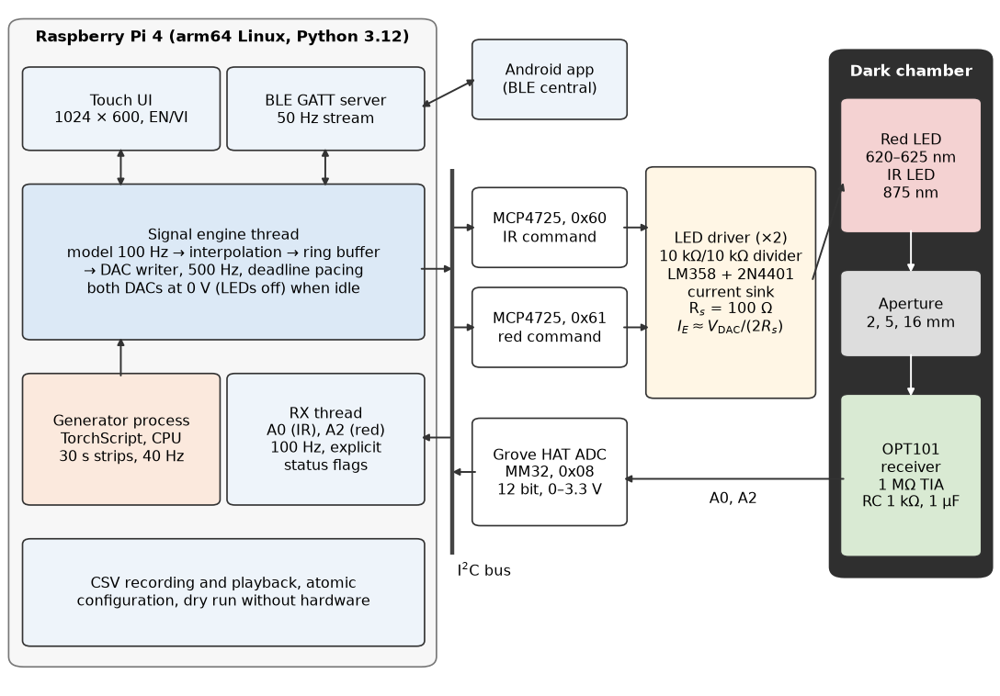
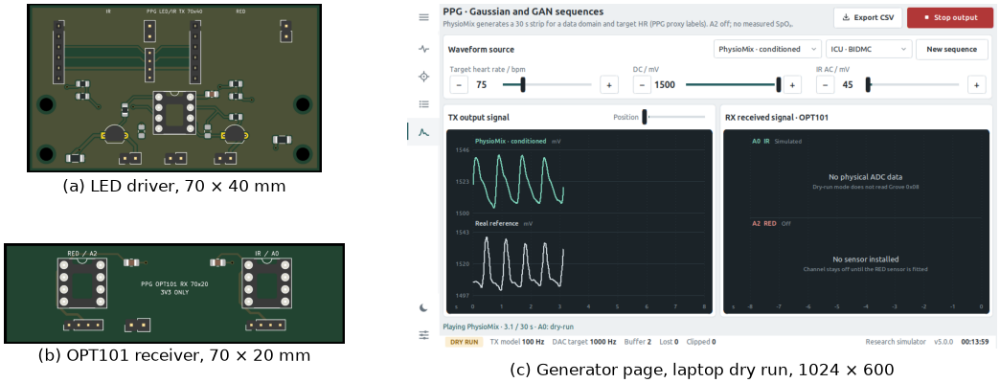
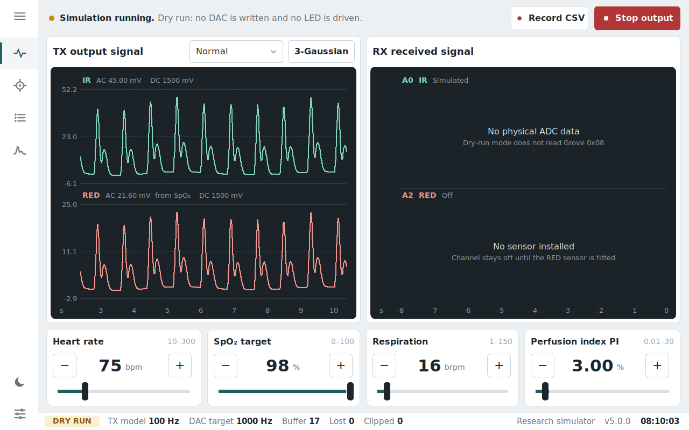
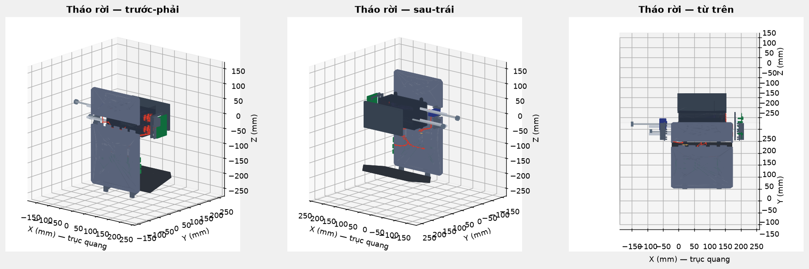
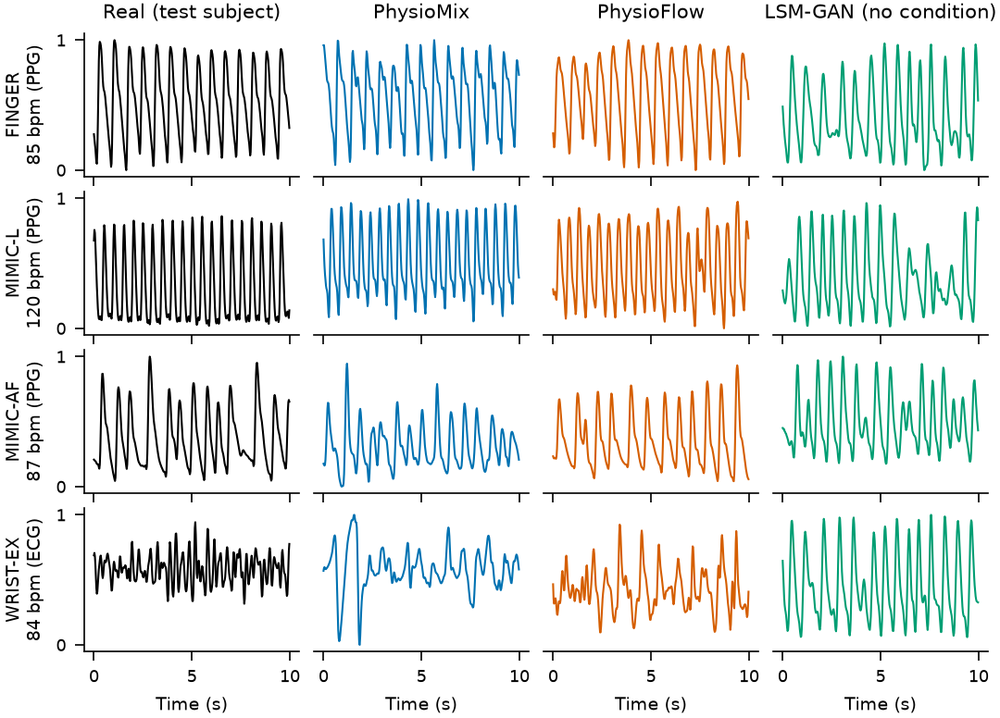
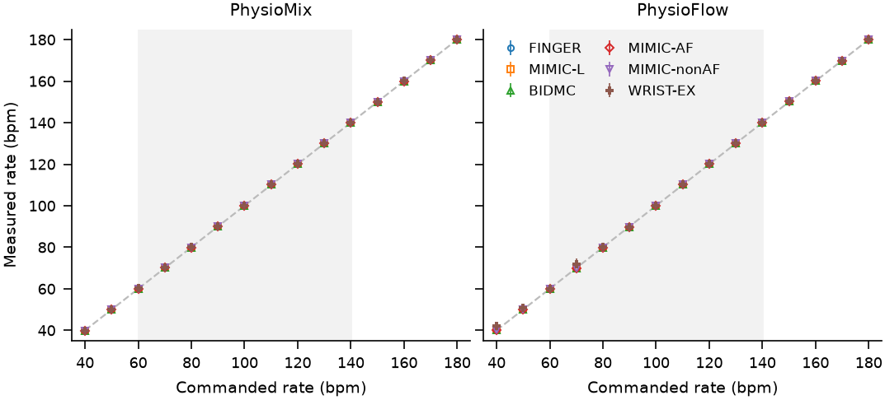
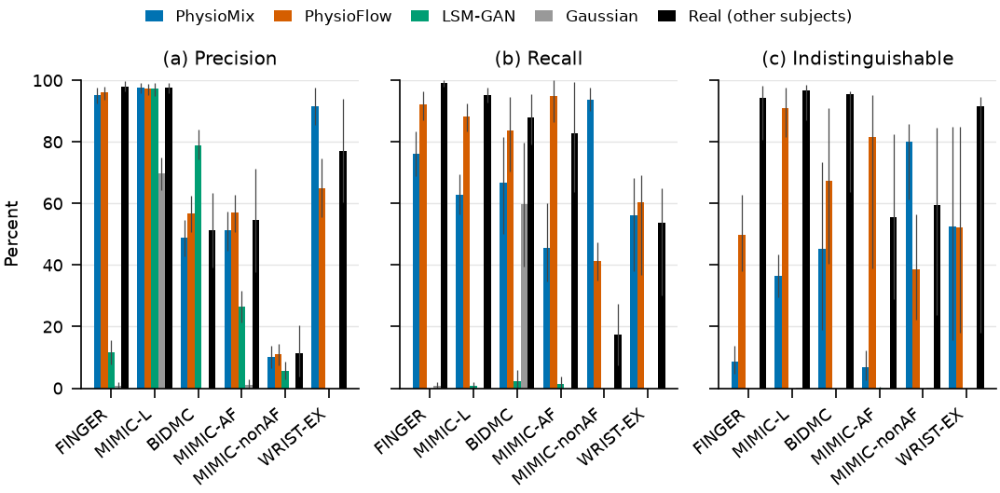
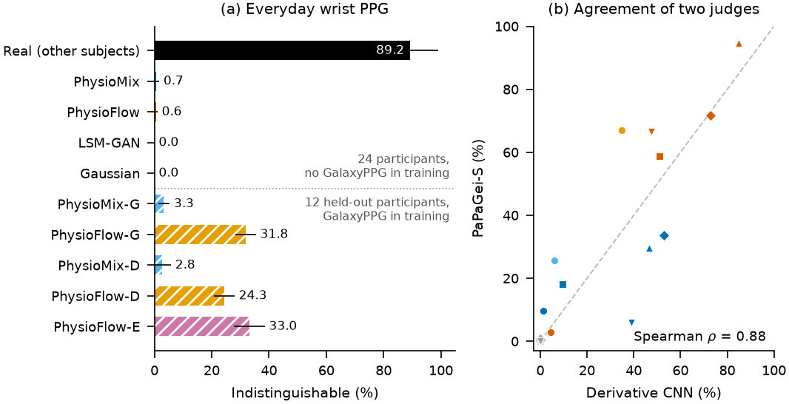

PPG Simulator · báo cáo cho khách hàng · cập nhật 01/11/2026
Máy giả lập nhịp mạch PPG, chạy AI trên Raspberry Pi
Phát ra ánh sáng “đập” như mạch máu thật để thử máy đo nhịp tim, đồng hồ thông minh và thuật toán, đúng nhịp tim bạn chọn.
< 1nhịp/phút sai số nhịp tim
(lệnh 40–180 nhịp/phút)
(lệnh 40–180 nhịp/phút)
50–91 %sóng PhysioFlow được chấm “không phân biệt được” trên 4 bộ dữ liệu
500 Hztốc độ xuất tín hiệu trên Pi, không trễ nhịp
98,1 %PPG-physiGPT V1: đặc trưng sóng so với người thật
01 Hệ thống




02 Máy tạo sóng thế nào
Nhịp tim do khung nhịp quyết định nên luôn đúng lệnh; AI chỉ lo cho dáng sóng giống thật.

03 Nhịp tim đúng lệnh

04 Giống thật đến đâu
Ngón tay và ICU: PhysioFlow giống thật nhất
Giám khảo độc lập PaPaGei xếp hạng giống vậy (ρ = 0,88)
Đồng hồ cổ tay đời thường: chưa đạt (dưới 1 %)


05 Model học thế nào
06 PPG-physiGPT V1 mới · nghiên cứu
Mô hình kiểu GPT, học 30 giây sóng PPG bệnh viện (MIMIC-III) từng giây một, train trên Kaggle 2 × T4.
98,1 %đặc trưng sóng so với người thật (V1 cần ≥ 95 %)
99,9 Mtham số, bản large
8,5 giờtrain trên 2 × T4
1,00AUC giám khảo nghiêm: vẫn nhận ra là sóng AI
07 Lộ trình
08 Giới hạn cần biết
Không phải thiết bị y tếĐánh giá kỹ thuật về dáng sóng, chưa kiểm định lâm sàng.
Đường quang chưa kiểm địnhĐã đo tín hiệu DAC trên Pi; ánh sáng tới cảm biến chưa được xác nhận.
Không dùng để kiểm SpO₂Một dáng sóng cho cả hai kênh, LED 625/875 nm khác máy đo oxy phổ biến.